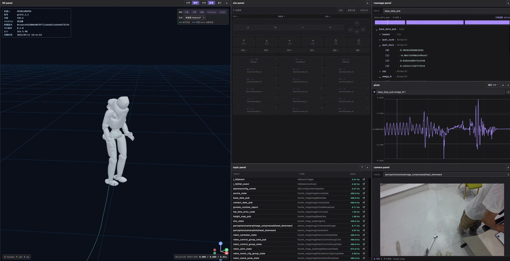
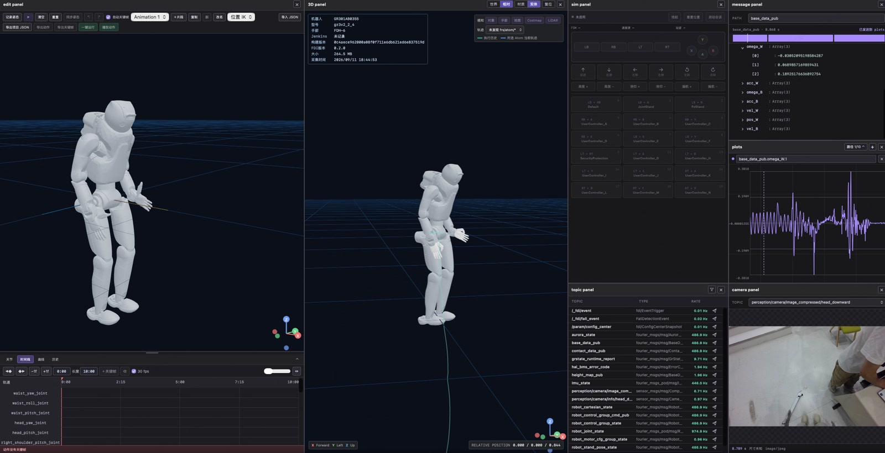

机器人可视化研发平台
在同一工作台连接数据、状态和场景，支撑机器人问题定位与开发联调。
本人职责可视化工作台、台架仿真与面板扩展开发
落地成果
- 数据接入类型
- 4 类
- 功能面板
- 13 类
- 仿真实机切换
- 10 秒内
解决的问题
- 机器人问题定位需要同时查看姿态、曲线、图像与消息，并关联不同来源和时间的数据。
- 离线回放、实时观测与仿真联调分别承担不同任务，需要统一工具入口，同时明确数据与控制目标。
- 不同团队需要不同的分析视图，固定工具难以持续满足运控、感知和二次开发的扩展需求。
个人贡献
- 支撑跨团队联动定位问题：设计开发机器人可视化研发工作台，统一离线回放与实时观测，接入 MCAP、Parquet、运动学轨迹和实时流 4 类数据，实现 3D 状态、曲线、图像和消息联动分析，服务系统、感知、导航及运控团队。
- 降低二次开发联调对实机的依赖：实现机器人系统级台架仿真、场景编辑及仿真实机快速切换，为二开用户提供可视化开发与联调环境，仿真实机切换在 10 秒内完成。
- 支持团队扩展和复用研发工具：实现插件化面板架构和布局复用，支持二开用户自定义面板，已接入运控、感知、FK/IK 动作编辑等 13 类功能面板。
关键设计
多源数据与联动分析
接入 MCAP、Parquet、运动学轨迹和实时流，以多面板工作台组织 3D、曲线、图像与消息。离线数据通过回放时间线联动查看，按需要核对源时间、发布时间和记录时间。
实时观测与仿真联调
工作台连接机器人运行时，配合系统级台架仿真和场景编辑开展联调。实时观测显示当前状态，离线回看依赖录包；界面显示流切换与机器人运行模式切换分别处理。
面板扩展与布局复用
通过插件化面板、自定义视图和布局复用承接团队差异化需求。多工作区、多页面组织不同数据源与分析布局，减少重复搭建调试环境的操作。
项目展示


多视角回放与曲线联动
回放过程中同步观察机器人姿态、运动轨迹、曲线与相机画面，结合多个视角定位状态变化。
动作编辑与三维预览
通过关节与末端操作调整机器人姿态，配合关键帧和时间轴查看动作效果，支持动作开发与离线预览。
台架仿真与状态联调
在工作台中启动仿真并查看机器人状态，配合控制面板完成站立、姿态与运动状态的联调。
场景编辑与障碍物配置
在三维场景中添加和调整障碍物，联动地图与资源面板，搭建机器人开发和仿真所需的测试场景。
感知结果可视化
将目标检测、分割与识别结果叠加到相机图像，直观核对感知输出与真实画面的对应关系。
数据载入与工作区切换
载入机器人数据后切换分析布局与观察视角，复用工作区开展回放和联调。